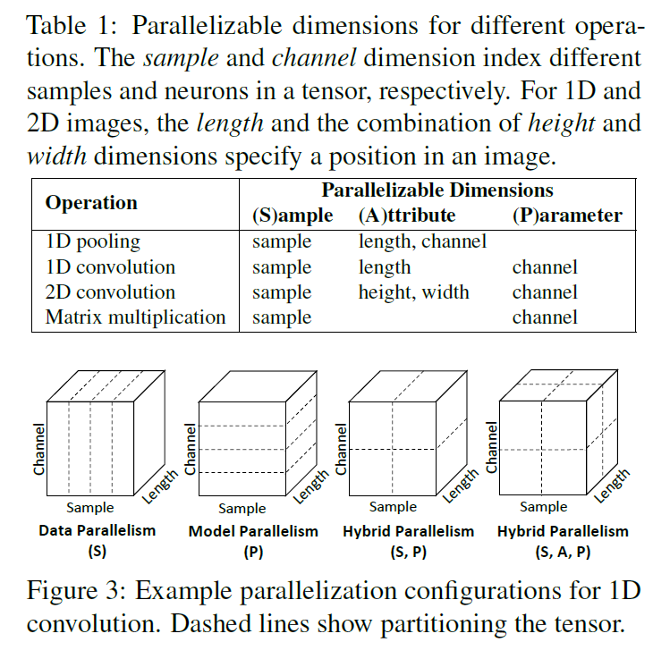
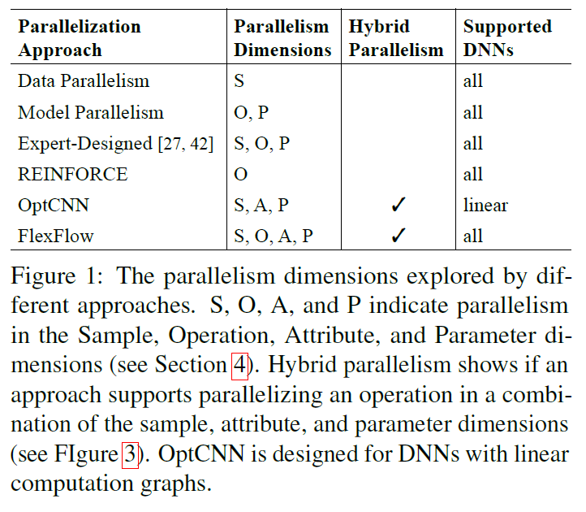

这篇论文是在之前survey在hybrid parallelism的部分提到的一篇论文，因为说是采用了一个execution simulator从而能够自动的进行并行策略的优化选取，比较好奇所以仔细看了一下。
这是斯坦福Matei Zaharia(写spark那个)18年发在axXiv,发表在sysML 19的文章，针对的是当前分布式处理DNN任务的时候并行策略难以选取的痛点。在之前survey中也有提到，目前大部分的分布式的任务训练仍然采用的是data parallelism的策略，即使是用到model parallelism，因为不知道如何划分layer导致往往不能达到最优的performance。那这篇文章旨在找出那个最优策略，不再单一的使用data or model parallelism。
那么第一个问题：
Q1: 既然是选取策略，那么一定有一个很多种策略组成的集合，那么这个集合是如何构建的呢？ 最终选取的是什么策略？
本文把我们所说的这个策略的集合或者说是策略池命名为SOAP space，这个space包含了对于一个operation的所有可能的分布式策略。它具备所有的可分的维度（可以理解为输入的属性），而这些维度又可以归类为以下几个维度：
sample dimension，parameter dimension，attribute dimension
其中样本维度是每个DNN model都有的，而如果一个维度在分割的时候需要分割模型参数，就将其归做参数维度，其他的归为属性维度。这n个维度中每个维度都有k个可能的取值，那么n*k即为所有可能的情况，也就是某个operation在运行时会derive出来的task个数。之后再对每种operation进行一个筛选的过程，所以总情况为 \(\sum\limits_{ {\rm{i}} = 1}^{opr - num} { {n_i}*{k_i}} \), opr-num为operation的种类数。这里又引出一个重要的前提，many DNN models use a small number of distinct
operators, 有了这个前提我们就可以把我们的资源池内策略数目变成可数的了。
所以我们最终要得到的策略即是对于每个operation选取一个并行策略的集合。

首先看表1，对于不同的操作，输入数据的维度归类是不同的。attribute这个维度可以比较随意的理解为平时我们不怎么会选择分割的一些输入参数。比较模糊的可能就是parameter维度，这里的channel都是指的图中的神经元，在model parallelism中切分的是模型的layer并不是以神经元为单位，不是很清楚这里具体是啥意思，如果以后有空看源码的话再说。图3就是对一维卷积不同的分割方法做了一个类比，其中hybrid parallelism则会涵盖到attribute 维度，至于目前的一些方法的分割方式可以总结如图1：

这里用强化学习去得到策略只针对每个operation，之后我会去看一下: Device placement optimization
with reinforcement learning。
Q2: 对于一个operation(o)以及其对应的SOAP space, 如何得到最优的策略？
在这种情况下，穷举所有的策略并对每一种策略进行实验得到结果进行比较显然是不现实的，所以本文主体部分使用一个预测算法预测在一个cluster上一个operation对于一个策略运行所花费的时间。这部分会在之后讲。
有了这个算法，我们能否直接对每一种策略进行一个预测估计呢，答案仍然是否定的，随着operation个数的增长，策略个数是呈指数级增长的，穷举复杂度太高了。所以本文采用了MCMC Sampling, 说白了就是每次随机一个策略，在规定的时间内得到最优的点。可以理解为就是一个的贪心策略。文章说的蛮复杂的，就不在这说了。
Q3: 对于采用了策略(S)运行在某一个特定cluster(D)的一个model(G)，如何预测它的运行时间？
首先明白两点：1> S包含了对于每一个operation的策略si， G是一个model的oprator graph，代表了一个模型不同操作之间的依赖关系。